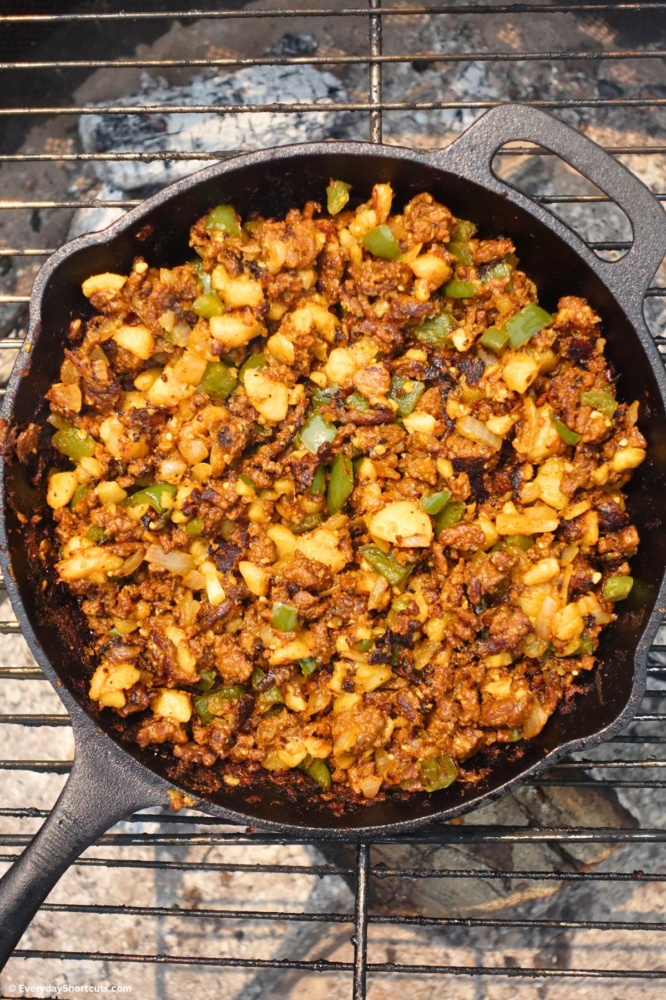

Ingredients
- 2 cups diced potatoes
- 1 cup diced bell peppers
- 1/2 cup diced onion
- 1 cup plant-based sausage or tofu cubes
- 1 tbsp olive oil
- 1/2 tsp smoked paprika
- Salt & pepper to taste
- Optional: chopped parsley for garnish
Instructions
- Heat olive oil in a large skillet over medium heat.
- Add potatoes and cook for 10 minutes, stirring occasionally.
- Add bell peppers, onion, and plant-based sausage; cook 5–7 more minutes until veggies are tender.
- Season with smoked paprika, salt, and pepper.
- Garnish with parsley and serve warm.